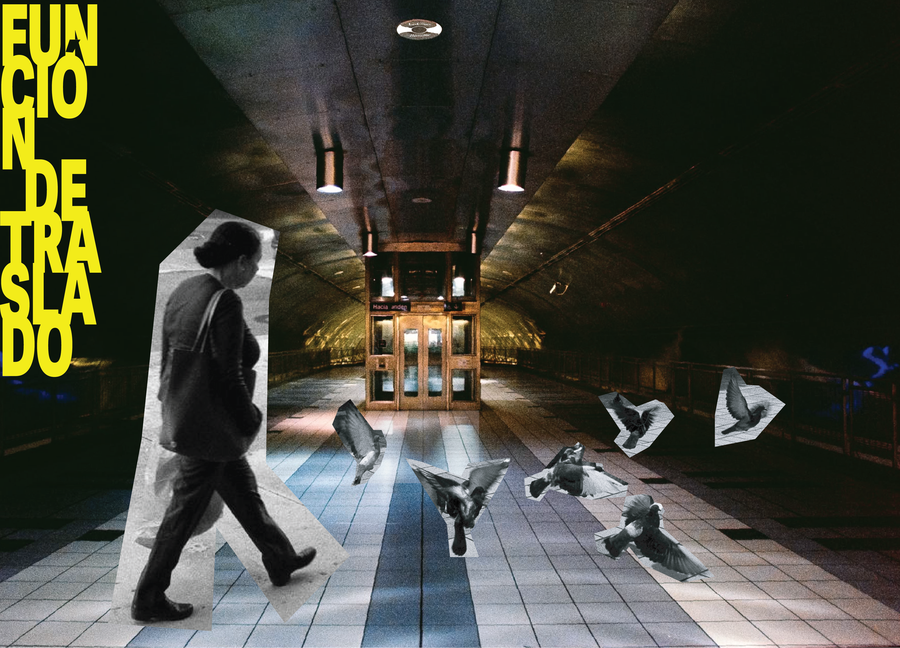

Our curatorial project uses Puerto Rico's Tren Urbano (TU) as its point of reference. Built from 1996 to 2004, this structure crosses the metropolitan area from San Juan to Bayamón and represented what was framed as a step forward for urban infrastructure and mobility in the region. But the use of $2 billion in public debt, its limited scope, and—until recently—its high cost have made the urban train a problematic structure: one repeatedly invoked symbolically in political platforms, which undermined its primary function as a means of public transportation for Puerto Ricans.
Although the TU was intended to meet people's mobility needs, the infrastructure it was built on does not align with Puerto Rico's social and economic reality. Through this proposal, we seek to encourage reflection on what the TU currently represents in the lives of the city's residents—not only in terms of maintenance and routes, but also in terms of what this infrastructure has meant for the places, communities, and natural environment through which the train travels.
The proposed artistic installations will transform the area surrounding the Río Piedras TU station, using sound, image, and movement to present worlds parallel to our own—worlds that challenge how we access and participate in both urban and natural contexts.